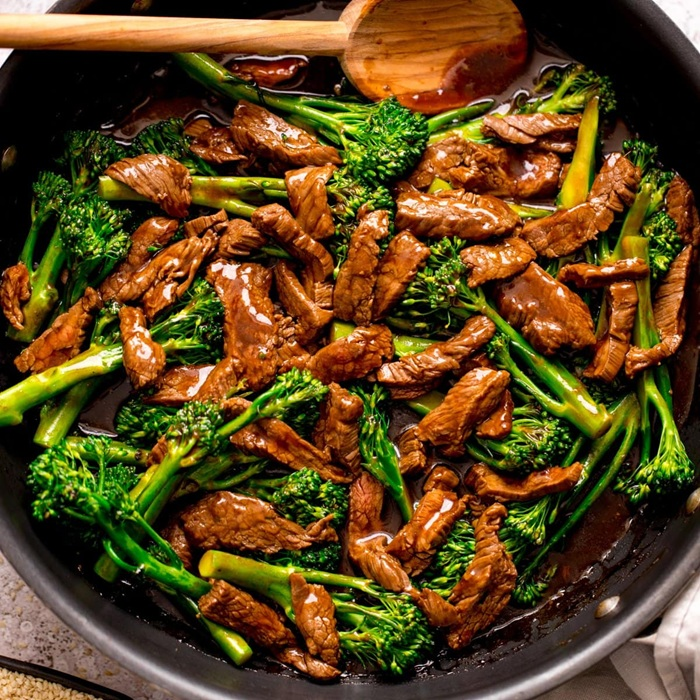

Lunch
Beef & broccoli stir-fry
Takeout classic at home. Thin steak strips, frozen broccoli, sticky soy-garlic sauce over rice.
~30 min
~$11–14
New
Ingredients & recipe
Ingredients (2 hungry)
- 1.25 lbsirloin or flank, thin strips
- 16 ozfrozen broccoli florets
- 1½ cupsdry rice
- ⅓ cupsoy sauce
- 2 tbspbrown sugar or honey
- 4 clovesgarlic, minced
- 1 tbspcornstarch + 2 tbsp water
- 2 tbspoil + black pepper
Steps
- Start rice. Mix soy, sugar, garlic, cornstarch slurry.
- Hot skillet + oil. Sear beef hard in batches, 1–2 min. Remove.
- Steam/sauté broccoli 4–5 min. Return beef, pour sauce, toss until glossy.
- Serve over rice. Bigger beef pile for him.
Punch-up: chili flakes + splash of vinegar in the sauce.